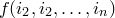

maximise <expression> via <variable> {, variable}
The maximise command can be used to find the maxima of algebraic expressions. A single algebraic expression should be supplied for optimisation, together with a comma-separated list of the variables with respect to which it should be optimised. In the following example, a maximum of the sinusoidal function  is sought:
is sought:
pyxplot> set numerics real
pyxplot> x=0.1
pyxplot> maximise cos(x) via x
pyxplot> print x/pi
0
Note that this particular example doesn’t work when complex arithmetic is enabled, since diverges to  at  .
.
Various caveats apply the maximise command, as well as to the minimise and solve commands. All of these commands operate by searching numerically for optimal sets of input parameters to meet the criteria set by the user. As with all numerical algorithms, there is no guarantee that the locally optimum solutions returned are the globally optimum solutions. It is always advisable to double-check that the answers returned agree with common sense.
These commands can often find solutions to equations when these solutions are either very large or very small, but they usually work best when the solution they are looking for is roughly of order unity. PyXPlot does have mechanisms which attempt to correct cases where the supplied initial guess turns out to be many orders of magnitude different from the true solution, but it cannot be guaranteed not to wildly overshoot and produce unexpected results in such cases. To reiterate, it is always advisable to double-check that the answers returned agree with common sense.